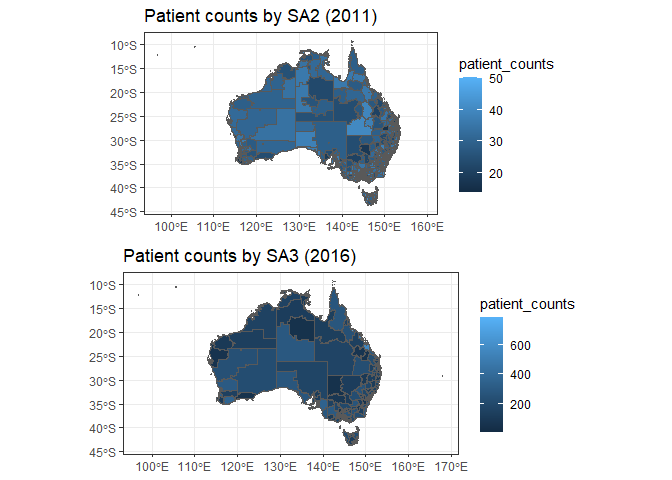

The goal of hpa.spatial is to make relevant shape files and data easily available and include helpful functions for the analysis of spatial data, focusing on the Australian (health) context.
Notes on other packages
Most shape files are available within {absmapsdata} and can be loaded using {strayr}.
The way that data are accessed with hpa.spatial both uses these packages as well as replicating their approach to access data from {hpa.spatial.data}.
Installation
hpa.spatial is only available here on GitHub. You can install the development or release versions of it using the code below:
# install.packages("remotes")
remotes::install_github("healthpolicyanalysis/hpa.spatial") # development version
remotes::install_github("healthpolicyanalysis/hpa.spatial@*release") # latest release versionGetting shapefiles
get_polygon() is used to get shape files from the abs.
sa2_2016 <- get_polygon(area = "sa2", year = 2016)
head(sa2_2016)
#> Simple feature collection with 6 features and 14 fields
#> Geometry type: MULTIPOLYGON
#> Dimension: XY
#> Bounding box: xmin: 149.0781 ymin: -36.00922 xmax: 150.2157 ymax: -34.98032
#> Geodetic CRS: WGS 84
#> sa2_code_2016 sa2_5dig_2016 sa2_name_2016 sa3_code_2016
#> 1 101021007 11007 Braidwood 10102
#> 2 101021008 11008 Karabar 10102
#> 3 101021009 11009 Queanbeyan 10102
#> 4 101021010 11010 Queanbeyan - East 10102
#> 5 101021011 11011 Queanbeyan Region 10102
#> 6 101021012 11012 Queanbeyan West - Jerrabomberra 10102
#> sa3_name_2016 sa4_code_2016 sa4_name_2016 gcc_code_2016 gcc_name_2016
#> 1 Queanbeyan 101 Capital Region 1RNSW Rest of NSW
#> 2 Queanbeyan 101 Capital Region 1RNSW Rest of NSW
#> 3 Queanbeyan 101 Capital Region 1RNSW Rest of NSW
#> 4 Queanbeyan 101 Capital Region 1RNSW Rest of NSW
#> 5 Queanbeyan 101 Capital Region 1RNSW Rest of NSW
#> 6 Queanbeyan 101 Capital Region 1RNSW Rest of NSW
#> state_code_2016 state_name_2016 areasqkm_2016 cent_long cent_lat
#> 1 1 New South Wales 3418.3525 149.7932 -35.45508
#> 2 1 New South Wales 6.9825 149.2328 -35.37590
#> 3 1 New South Wales 4.7634 149.2255 -35.35103
#> 4 1 New South Wales 13.0034 149.2524 -35.35520
#> 5 1 New South Wales 3054.4099 149.3911 -35.44408
#> 6 1 New South Wales 13.6789 149.2028 -35.37760
#> geometry
#> 1 MULTIPOLYGON (((149.7606 -3...
#> 2 MULTIPOLYGON (((149.2192 -3...
#> 3 MULTIPOLYGON (((149.2315 -3...
#> 4 MULTIPOLYGON (((149.2315 -3...
#> 5 MULTIPOLYGON (((149.2563 -3...
#> 6 MULTIPOLYGON (((149.2064 -3...
sa2_2016 |>
ggplot() +
geom_sf() +
theme_bw() +
ggtitle("SA2 (2016)")
lga_2016 <- get_polygon(area = "lga", year = 2016)
head(lga_2016)
#> Simple feature collection with 6 features and 7 fields
#> Geometry type: MULTIPOLYGON
#> Dimension: XY
#> Bounding box: xmin: 142.4523 ymin: -37.50503 xmax: 153.6076 ymax: -28.7043
#> Geodetic CRS: WGS 84
#> lga_code_2016 lga_name_2016 state_code_2016 state_name_2016
#> 1 10050 Albury (C) 1 New South Wales
#> 2 10130 Armidale Regional (A) 1 New South Wales
#> 3 10250 Ballina (A) 1 New South Wales
#> 4 10300 Balranald (A) 1 New South Wales
#> 5 10470 Bathurst Regional (A) 1 New South Wales
#> 6 10550 Bega Valley (A) 1 New South Wales
#> areasqkm_2016 cent_long cent_lat geometry
#> 1 305.9459 146.9704 -36.02660 MULTIPOLYGON (((147.0967 -3...
#> 2 8620.6990 151.8291 -30.33634 MULTIPOLYGON (((150.9923 -3...
#> 3 484.9389 153.4861 -28.85288 MULTIPOLYGON (((153.4496 -2...
#> 4 21690.6753 143.6116 -33.95034 MULTIPOLYGON (((143.5525 -3...
#> 5 3817.8646 149.5256 -33.43010 MULTIPOLYGON (((149.8696 -3...
#> 6 6278.8811 149.7176 -36.82594 MULTIPOLYGON (((149.9763 -3...
lga_2016 |>
ggplot() +
geom_sf() +
theme_bw() +
ggtitle("LGA (2016)")
This is used in the same way as strayr::read_absmap() except it also includes a simplify_keep argument for simplifying the polygon.
sa2_2016_simple <- get_polygon(area = "sa2", year = 2016, simplify_keep = 0.1)
sa2_2016 |>
filter(gcc_name_2016 == "Greater Brisbane") |>
ggplot() +
geom_sf() +
scale_x_continuous(limits = c(152.9, 153.1)) +
scale_y_continuous(limits = c(-27.4, -27.6)) +
theme_bw()
sa2_2016_simple |>
filter(gcc_name_2016 == "Greater Brisbane") |>
ggplot() +
geom_sf() +
scale_x_continuous(limits = c(152.9, 153.1)) +
scale_y_continuous(limits = c(-27.4, -27.6)) +
theme_bw()
Other shapefiles
Aside from the built in shapefiles that are hosted by {absmapsdata}, get_polygon() can also access shapefiles for local hospital networks (LHNs) and Primary Health Networks (PHNs).
For example, these can be accessed by the "area" or "name" arguments as “LHN”.
qld_hhs <- get_polygon(area = "LHN") |> filter(state == "QLD")
#> The data for the Local Hospital Networks (LHN) are from here: <https://hub.arcgis.com/datasets/ACSQHC::local-hospital-networks/explore>
head(qld_hhs)
#> Simple feature collection with 6 features and 3 fields
#> Geometry type: MULTIPOLYGON
#> Dimension: XY
#> Bounding box: xmin: 137.9975 ymin: -29.1779 xmax: 153.5522 ymax: -15.90277
#> Geodetic CRS: GDA2020
#> # A tibble: 6 × 4
#> LHN_Name state STATE_CODE geometry
#> <chr> <fct> <chr> <MULTIPOLYGON [°]>
#> 1 Cairns and Hinterland QLD 3 (((146.1522 -17.99844, 146.1524 -17.99…
#> 2 Central Queensland QLD 3 (((150.0524 -22.13545, 150.0573 -22.13…
#> 3 Central West (Qld) QLD 3 (((143.2272 -21.31218, 143.2364 -21.31…
#> 4 Darling Downs QLD 3 (((150.245 -25.4072, 150.2493 -25.4081…
#> 5 Gold Coast QLD 3 (((153.4123 -27.9313, 153.4128 -27.931…
#> 6 Mackay QLD 3 (((147.7665 -19.70548, 147.7666 -19.70…
qld_hhs |>
ggplot() +
geom_sf() +
theme_bw()
Mapping data between ASGS editions
map_data_with_correspondence() is used to map data across ASGS editions.
When used with unit level data, it will randomly allocate the value to the code of the updated edition based on the population-weighted proportions (as probabilities) on the relevant correspondence table.
map_data_with_correspondence(
codes = c(107011130, 107041149),
values = c(10, 10),
from_area = "sa2",
from_year = 2011,
to_area = "sa2",
to_year = 2016,
value_type = "units"
)
#> # A tibble: 2 × 2
#> SA2_MAINCODE_2016 values
#> <chr> <dbl>
#> 1 107011547 10
#> 2 107041548 10When used with aggregate data, it will split the value among the codes of the updated edition based on the population-weighted proportions on the relevant correspondence table.
map_data_with_correspondence(
codes = c(107011130, 107041149),
values = c(10, 10),
from_area = "sa2",
from_year = 2011,
to_area = "sa2",
to_year = 2016,
value_type = "aggs"
)
#> # A tibble: 5 × 2
#> SA2_MAINCODE_2016 values
#> <chr> <dbl>
#> 1 107011545 4.82
#> 2 107011546 3.62
#> 3 107011547 1.57
#> 4 107041548 4.49
#> 5 107041549 5.51Example
Suppose we have counts of patients within SA2s (2011) and we want to aggregate these up into SA3s (2016 edition). Here is how we could do this with map_data_correspondence() mapping up both to a higher level of ASGS and to a more recent edition.
sa2_2011 <- get_polygon("sa22011")
sa2_2011$patient_counts <- rpois(n = nrow(sa2_2011), lambda = 30)
sa3_counts <- map_data_with_correspondence(
codes = sa2_2011$sa2_code_2011,
values = sa2_2011$patient_counts,
from_area = "sa2",
from_year = 2011,
to_area = "sa3",
to_year = 2016,
value_type = "aggs"
) |>
rename(patient_counts = values)
#> Error in get(filename) : object 'CG_SA2_2016_SA3_2016' not found
sa3_2016 <- get_polygon("sa32016") |>
left_join(sa3_counts)
sa2_2011 |>
ggplot() +
geom_sf(aes(fill = patient_counts)) +
ggtitle("Patient counts by SA2 (2011)") +
theme_bw()
sa3_2016 |>
ggplot() +
geom_sf(aes(fill = patient_counts)) +
ggtitle("Patient counts by SA3 (2016)") +
theme_bw()